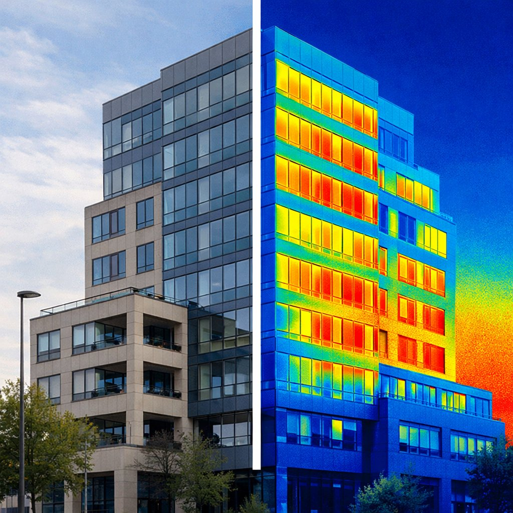

Richiedi un contatto con un nostro tecnico specializzato. Utilizziamo tecnologie avanzate e non invasive per individuare con precisione la fonte del problema, senza compromettere le strutture.
Infiltrazioni d'acqua, muffa e umidità di risalita sono problemi che si aggravano nel tempo se non individuati e risolti alla radice. La nostra missione è trovare l'origine esatta con tecnologie che non richiedono demolizioni.
Terrazzi, balconi, coperture piane, facciate. L'acqua trova sempre un percorso nascosto fino alle strutture interne.
Scarichi, impianti di riscaldamento, tubazioni idriche e antincendio. Perdite occulte che causano danni ingenti.
Condensa, ponti termici, umidità di risalita. Problemi di salubrità degli ambienti con causa spesso non evidente.
Indagini per CTU e CTP, collaudi impermeabilizzazioni, documentazione tecnica per controversie legali.
Utilizziamo le strumentazioni più avanzate disponibili sul mercato per garantire diagnosi accurate senza demolizioni o danni alle strutture.

Descrivi brevemente la problematica. Risponderemo con una valutazione e un preventivo gratuito senza impegno.